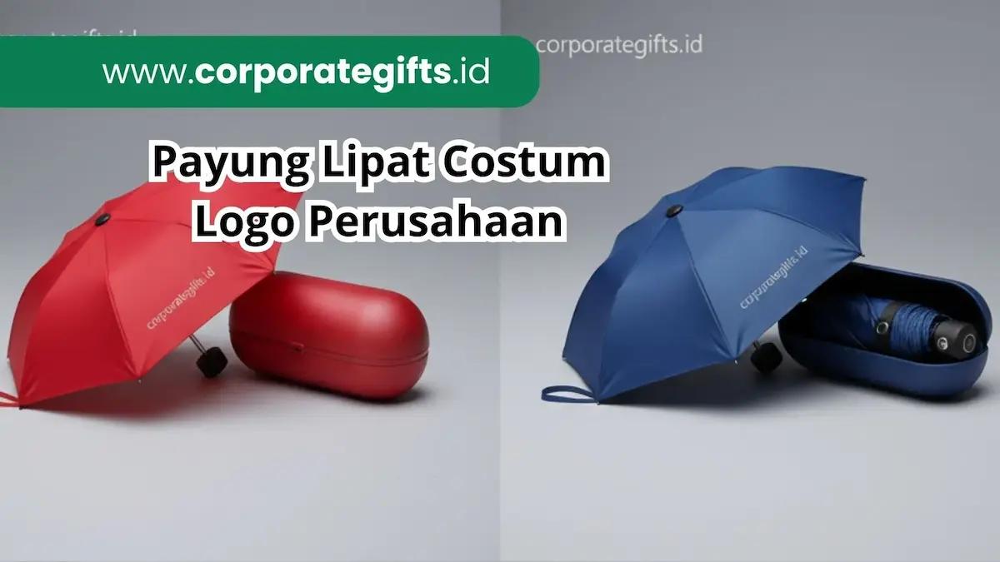

Corporate Gifts ID - Payung lipat custom logo adalah souvenir bank eksklusif yang paling direkomendasikan karena sangat praktis digunakan sehari-hari, berdaya tahan lama, dan menyediakan ruang branding luas untuk menampilkan identitas visual perbankan. Souvenir ini telah menjadi pilihan utama bank-bank terkemuka seperti BNI, Mandiri, dan BRI dalam mendukung acara gathering nasabah prioritas, seminar bisnis, hingga program apresiasi nasabah dan CSR institusi.
Dalam ekosistem perbankan yang dinamis dan kompetitif, pengadaan souvenir kantor bukan sekadar seremonial formalitas belaka. Pilihan cinderamata yang tepat berfungsi sebagai investasi relasi jangka panjang untuk menjaga loyalitas nasabah, mempererat hubungan kemitraan dengan debitur korporat, serta memperkuat reputasi institusi keuangan di mata publik. Sebagai kategori souvenir eksklusif, payung lipat memadukan nilai guna nyata dan prestise korporat yang mencerminkan dedikasi bank dalam melindungi serta melayani para nasabahnya di segala situasi cuaca.
Poin Kunci Souvenir Bank Payung Lipat Custom:
- Branding Terbuka Maksimal: Daun payung menyediakan bidang display luas untuk logo, gradasi warna korporat, dan tagline resmi bank.
- Fungsionalitas Sepanjang Musim: Perlindungan ganda dari sengatan terik sinar UV matahari dan guyuran hujan deras di ruang publik.
- Prestige & Durabilitas: Kombinasi rangka fiberglass tahan angin dan kain pongee berkualitas tinggi menjamin masa pakai bertahun-tahun.
- Fleksibilitas Segmen: Sangat relevan untuk nasabah prioritas, pembukaan rekening baru, apresiasi stakeholder, hingga suvenir RUPS.
Mengapa Bank Membutuhkan Souvenir Eksklusif-
Souvenir perbankan memegang peranan krusial sebagai perpanjangan dari strategi komunikasi dan touchpoint merek. Produk cinderamata yang berada langsung di tangan nasabah memiliki dampak psikologis yang jauh lebih mendalam dibandingkan media iklan digital sekilas. Berikut adalah alasan fundamental mengapa institusi perbankan memerlukan souvenir eksklusif:
- Membangun Brand Awareness Luas: Logo dan identitas visual bank yang tercetak presisi pada payung lipat akan terekspos secara organik ke khalayak ramai setiap kali produk tersebut dibuka di jalan raya, pusat perkantoran, maupun tempat umum lainnya.
- Meningkatkan Loyalitas Nasabah: Pemberian hadiah bernilai guna tinggi menghadirkan rasa dihargai yang tulus, sehingga menciptakan ikatan emosional positif yang memperkokoh loyalitas nasabah terhadap produk tabungan, investasi, dan kredit bank Anda.
- Memperkuat Citra Profesional dan Bonafide: Standar souvenir yang kokoh, rapi, dan dikemas elegan memancarkan sinyal kuat bahwa bank menerapkan standar kualitas terbaik di setiap aspek layanannya.
Payung Lipat sebagai Souvenir Bank Premium
Alasan payung lipat konsisten menjadi primadona souvenir di sektor jasa keuangan terletak pada kombinasi tiga keunggulan praktis: fungsionalitas harian, daya tarik visual yang fleksibel, dan portabilitas tinggi.
- Praktis Digunakan: Format payung lipat 3 atau payung mini sangat ringkas disimpan ke dalam tas kantor, ransel laptop, maupun kompartemen pintu mobil, memudahkan nasabah membawanya ke mana pun mereka beraktivitas.
- Ramah Branding: Delapan panel daun payung menawarkan kanvas desain lapang. Bank dapat menerapkan sablon presisi pada dua sisi simetris atau cetak sublimasi full panel untuk edisi tematik perayaan anniversary.
- Cocok untuk Seluruh Segmen: Produk ini diterima sangat baik oleh kalangan eksekutif perbankan, nasabah segmen wealth management, peserta workshop literasi keuangan, hingga para mitra B2B korporat.

Payung lipat custom logo dengan lapisan anti-UV dan rangka kokoh menjadi cinderamata favorit nasabah prioritas perbankan.
Contoh Implementasi Souvenir Bank Ternama
Berbagai institusi perbankan nasional skala besar telah mengintegrasikan payung lipat custom ke dalam agenda seremonial dan program tahunan mereka:
- BNI (Bank Negara Indonesia): Menghadirkan payung lipat otomatis eksklusif beraksen oranye dan hijau zamrud untuk bingkisan nasabah Emerald dan souvenir konferensi investasi nasional.
- Bank Mandiri: Memanfaatkan payung lipat mini compact berbalut hardcase resleting khusus pada program apresiasi nasabah prioritas, CSR bina lingkungan, serta seminar edukasi wirausaha.
- BRI (Bank Rakyat Indonesia): Mendistribusikan payung lipat lapis anti-UV premium dengan konstruksi rangka anti-badai untuk tamu undangan seremonial daerah dan mitra kerja mikro hingga korporasi.
Praktik dari bank-bank terdepan ini menegaskan bahwa cinderamata payung lipat adalah instrumen promosi yang tepat guna, bernilai ekonomis tinggi, dan memberikan paparan brand jangka panjang secara nyata.
Spesifikasi dan Fitur Payung Lipat Custom Bank
Untuk memastikan cinderamata yang diserahkan kepada nasabah mencerminkan kualitas perbankan papan atas, berikut adalah komparasi spesifikasi teknis payung lipat yang umum dipesan di CorporateGifts.ID:
| Komponen Teknis | Opsi Standar | Opsi Premium VIP | Manfaat untuk Bank |
|---|---|---|---|
| Bahan Kain Daun | Polyester 190T Water-Repellent | Pongee Berlapis Black Vinyl Anti-UV 100% | Melindungi nasabah dari radiasi panas matahari dan hujan lebat. |
| Rangka & Jari-Jari | Besi Elektroplating Anti-Karat | Fiberglass Windproof (Tahan Tekukan Angin Kencang) | Payung tidak patah saat terbalik terkena terpaan angin badai. |
| Mekanisme Buka | Manual Push Button (Aman) | One-Touch Automatic Open & Close | Sangat praktis digunakan nasabah saat hendak keluar-masuk mobil. |
| Teknik Cetak Logo | Sablon Presisi High-Density | Direct-to-Film (DTF) / Sablon Sublimasi Digital | Warna logo tajam, tahan pudar, dan tidak mudah terkelupas. |
| Kemasan & Sarung | Pouch Kain Senada dengan Logo | Hardcase Resleting EVA atau Cylinder Rigid Box | Meningkatkan unboxing experience dan nilai prestise hadiah. |
Cara Memilih Vendor Souvenir Bank yang Tepat
Memilih partner pengadaan B2B memerlukan kehati-hatian khusus karena reputasi brand perbankan menjadi taruhannya. Berikut parameter evaluasi utama sebelum menetapkan vendor:
- Kualitas Material Fisik Teruji: Pastikan vendor menyediakan sampel material payung dengan kain pongee anti-UV dan rangka fiberglass elastis yang tidak mudah berkarat.
- Presisi Warna dan Kerapian Sablon: Warna logo perbankan memiliki kode Pantone ketat. Pastikan vendor memiliki mesin cetak dengan akurasi warna tinggi serta ketahanan tinta terhadap gesekan air.
- Pilihan Packaging Eksklusif: Hadiah perbankan akan terlihat jauh lebih mewah jika dilengkapi opsi kotak rigid kaku dengan deboss perak/emas atau tas kain blacu berlogo.
- Reputasi dan Legalitas Perusahaan B2B: Pilih vendor resmi seperti CorporateGifts.ID yang memiliki badan hukum sah, faktur pajak resmi, sistem kontrol kualitas ketat, dan portofolio terverifikasi melayani institusi finansial nasional.
Manfaat Payung Lipat Custom Logo untuk Branding Bank
Penggunaan cinderamata payung lipat memberikan laba atas investasi promosi yang sangat kompetitif bagi divisi marketing dan komunikasi korporat:
- Visibilitas Merek yang Konsisten: Bergerak sebagai papan reklame portabel setiap kali nasabah melangkah di area perkotaan saat hujan maupun terik matahari.
- Mempererat Retensi Nasabah: Nasabah merasa dihargai dengan cinderamata fungsional yang dapat dipakai berulang kali oleh seluruh anggota keluarga mereka.
- Promosi Hemat Biaya Jangka Panjang: Masa pakai payung lipat berkualitas mencapai 2 hingga 4 tahun, menghasilkan cost-per-impression yang sangat rendah dibanding media promosi konvensional.
- Sangat Fleksibel untuk Rangkaian Acara: Sangat pas disandingkan dengan tumbler stainless steel, buku agenda kulit, atau pulpen metal dalam satu paket seminar kit maupun hampers tahun baru.
Pertanyaan Seputar Souvenir Bank Payung Lipat (FAQ)

Ditulis oleh: Arinda Zakia
Senior Corporate Gifting SpecialistSpesialis kurasi merchandise dan souvenir korporat berpengalaman dalam membantu instansi perbankan, BUMN, dan perusahaan multinasional mewujudkan cinderamata berkelas tinggi yang tepat guna.
Lihat Profil Lengkap & Panduan Lainnya